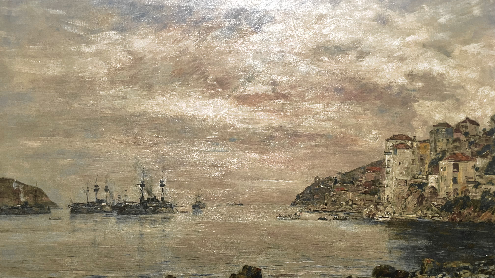

DÉDAL DES COULEURS
Paul DECHEWSKY
Paul DECHEWSKY
La rade de Villefranche-sur-Mer, 2004
Paul DECHEWSKY
La Rade de Villefranche justifie encore le surnom de “roi des ciels” que lui a decerné Corot.
Toute l’attention de Dechewsky se porte sur les effets de l’eau se mariant au ciel dillaté et immense et à l’évanescence des nuages, dans une quête toujours renouvelée de captation de la lumière.
Monsieur DECHEWSKY est un passionné d’art qui a su faire de sa passion un métier en exposant et vendant ses propres oeuvres ainsi que celles d’autres artistes. Son dévouement fait de lui une figure incontournable du monde de l’art en France.
Travaillant dans le milieu artistique depuis trente ans, il décide d’ouvrir sa propre galerie d’art à Paris, Dédal des couleurs.
A travers celle-ci, M.DECHEWSKY vous invite à découvrir ses réalisations ainsi que celles d’autres artistes talentueux. Il est alors constamment en recherche de nouveaux talents qui sauront captiver votre attention.
Plus que galeriste, c’est un artiste accompli connu pour ses peintures colorées et dynamiques qui sucsitent l’émotion et l’émerveillement des spectateurs.
Il est également sollicité pour donner des conférences ainsi que des cours sur l’histoire de l’art et les différentes techniques de création artistique.